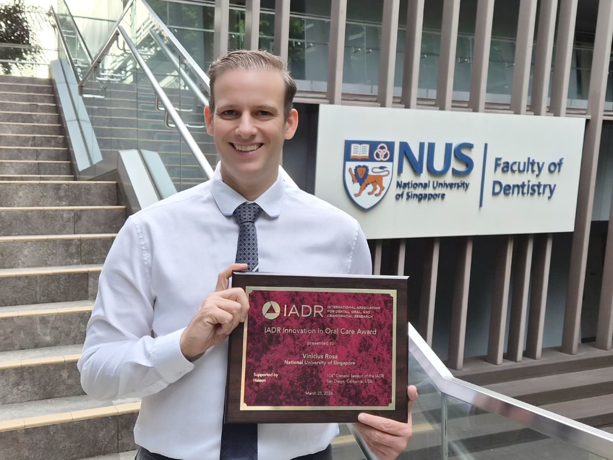

A/P Rosa receives the 2026 IADR Innovation in Oral Care Award
A highly competitive international award recognising technologies and biomaterials with the potential to improve oral health at population level.

Associate Professor Vinicius Rosa has received the 2026 IADR Innovation in Oral Care Award, a highly competitive international recognition given by the International Association for Dental, Oral and Craniofacial Research (IADR) and sponsored by Haleon.
The award supports the development of new technologies, biomaterials, compounds and devices with the potential to improve oral health in everyday settings and at the population level. It recognises work that bridges fundamental materials science and translational impact.
The award supports technologies and biomaterials with the potential to improve oral health at the population level.
A/P Rosa's research integrates biomaterials design with artificial intelligence to create more predictive, human-relevant platforms for testing the safety and bioactivity of dental materials — an approach with potential applications well beyond oral healthcare.
The recognition reflects the growing scientific, translational and societal relevance of A/P Rosa's research, and reinforces Singapore's role in advancing biomedical innovation with impact beyond oral healthcare.